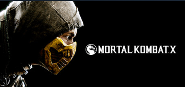

Action Games
An action game is a video game genre that emphasizes physical challenges, including hand–eye coordination and reaction time. The genre includes a large variety of sub-genres, such as fighting games, beat 'em ups, shooter games, rhythm games and platform games. Multiplayer online battle arenas and some real-time strategy games are also considered action games.
In an action game, the player typically controls a character often in the form of a protagonist or avatar. This player character must navigate a level, collecting objects, avoiding obstacles, and battling enemies with their natural skills as well as weapons and other tools at their disposal. At the end of a level or group of levels, the player must often defeat a boss enemy that is more challenging and often a major antagonist in the game's story.
Alternatively, the player gets to the end of the game by finishing a sequence of levels to complete a final goal, and see the credits. Some action games, such as early arcade games, are unbeatable and have an indefinite number of levels. The player's only goal is to get as far as they can, to maximize their score.
Notable Examples
Mortal Kombat X (2015)
Mortal Kombat X is a landmark fighting game known for its brutal combat mechanics, similarly diverse character roster and cinematic presentation. The game features a deep storyline, engaging multiplayer modes, and a robust customization system. Its innovative use of interactive environments and dynamic fatalities has set new standards in the fighting game genre.
Street Fighter II (1991)
Street Fighter II revolutionized the fighting game subgenre with its diverse roster of characters, strategic combat mechanics, and competitive multiplayer. Players engage in one-on-one battles, mastering combos and special moves to defeat opponents. The game's success popularized arcade tournaments and established many conventions still used in fighting games today.